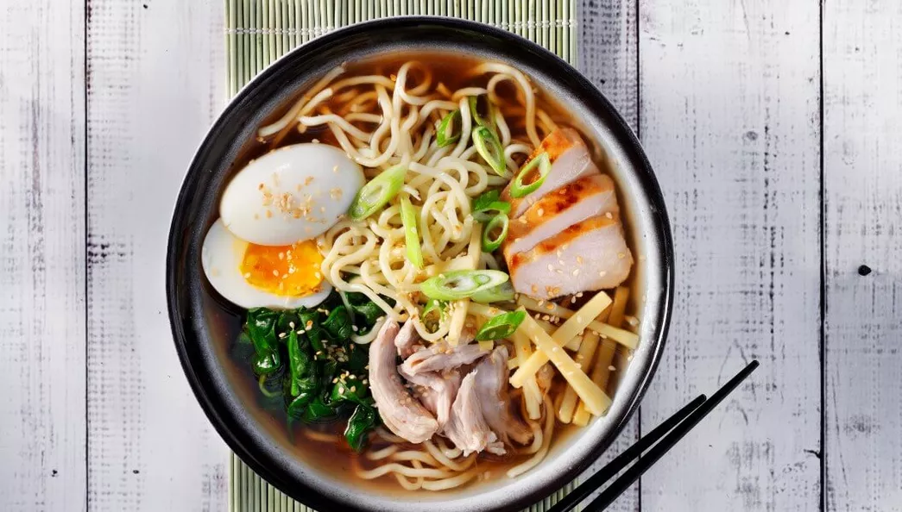

Home
Ramen Noodles

Ramen Noodle Soup with Pork
a Japanese noodle soup dish that features Chinese-style wheat noodles served in a flavorful broth. The dish is highly customizable, with a variety of broths, noodles, and toppings like sliced pork, nori (seaweed), and green onions, and is considered a staple of Japanese cuisine and a popular fast food
Components of Ramen
- Broth: A rich, savory broth forms the base of the soup.
The most common types are classified by their main flavor,
which can be soy sauce (\(shoyu\)), miso, salt (\(shio\)), or pork bone broth (\(tonkotsu\)).
The broth is often prepared for hours or even days to develop its full flavor.
- Noodles: These are wheat flour noodles seasoned with salt, water, and an alkaline solution called kansui.
The kansui gives ramen noodles their unique chewy texture and color.
- Toppings A wide selection of toppings can be added to the bowl, which are chosen to complement the broth and noodles.
Common additions include sliced pork, boiled eggs, dried seaweed (nori), and green onions.
Ingredients for our Ramen
- 1 packet of Noodles (dried or fresh)
- 500ml Chicken or Vegetable Stock
- 2 Soft Boiled Eggs
- 150g Beansprouts
- 50g finely chopped spring onion
- 50g Bamboo Shoots (Tinned is fine)
- 400g your choice of protien (Chicken, Pork, Beef or Tofu work well)
- 1 sheet Nori seaweed
- Soy Sauce (To taste)
Steps
- Cook the noodles as per the packet instructions and drain
- Place the stock into a pan and bring to temperature (Just before boiling)
- In a bowl place the cooked noodles, beansprouts, protein, eggs and bamboo shoots
- Pour over the hot stock and allow to rest for 2 mins.
- garnish with Nori (torn into strips) and the finely chopped spring onion
- Enjoy!